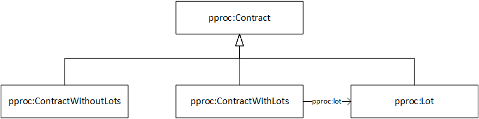

3. Descripción de PPROC volver a TdC
3.1. El contrato volver a TdC
La principal clase de la ontologia PPROC es pproc:Contract, pues define el concepto núcleo de toda contratación pública. Toda información de un único contrato parte de esta clase o de cualquiera de las clases enlazadas a partir de esta.
3.1.1. Tipos de contrato volver a TdC
La clase pproc:Contract dispone de numerosas subclases que ayudan a definer más específicamente la naturaleza del contrato, la clasificación completa de la clase pproc:Contract es la siguiente.

Esta clasificación de pproc:Contract nos permite definir el tipo de contrato dependiendo de diversos criterios:
- Tipo administrativo de contrato
- Tipo de contrato por lotes
- Tipo de contrato por acuerdo
Al utilizar estos tipos de contratos hay que tener en cuenta que existe disjunción entre tipos de la misma "rama", es decir, no se puede clasificar un contrato como [Contrato con lotes] y como [Contrato sin lotes], al pertenecer los dos a [Tipo de contrato por lotes]. Sin embargo, podríamos definir un contrato como [Contrato sin lotes] y [Contrato de obras].
Aparte de estos tipos disjuntos entre ellos, se podrá clasificar un contrato utilizando las siguientes clases. Al contrario que con los anteriores grupos de clases, estas no presentan disjunción entre ellas:
Ejemplo de contrato de varios tipos
ex:aContract rdf:type pproc:Contract, pproc:SuppliesContract, pproc:RentContract,
pproc:ContractWithoutLots, pproc:MultiannualContract,
pproc:HarmonizedContract .
Contrato de alquiler de suministros, no dividido en lotes, plurianual y armonizado.
3.1.2. Los lotes en el contrato volver a TdC
Tal y como se ha podido observar en el apartado anterior, se puede especificar el tipo de contrato por lotes utilizando las clases pproc:ContractWithLots, pproc:ContractWithoutLots y pproc:Lot. Estas clases son disjuntas entre ellas, por lo que no se podrán utilizar para instanciar el mismo contrato.
En la ontología PPROC los lotes se tratan de manera similar al resto de contratos, tratando lote a su vez como un contrato (pproc:Lot es subclase de pproc:Contract); por lo tanto se pueden utilizar las mismas propiedades en ambos.

Existen dos supuestos básicos en contratación cuando hablamos de tipo de contrato por lotes, el primero es un contrato que no dispone de lote alguno. Para etiquetar este tipo de contratos solamente sería necesario instanciar el contrato a un
El segundo supuesto es en el que se dispone de contrato con separación por lotes. Para especificar este tipo de contratos en primer lugar necesitaremos el contrato "base", que es el que se divide en lotes, este contrato se instanciará con pproc:ContractWithLots. Para relacionar este contrato "base" con sus lotes se utiliza la propiedad pproc:lot, que irá siempre de un pproc:ContractWithLots a un pproc:Lot.
Al estar definido el dominio y rango de la propiedad pproc:lot se permite preveer algunos fallos obvios tales como utilizar este propiedad con una instancia de pproc:ContractWithoutLots. A continuación se incluye dos ejemplos del uso de lotes.
Ejemplo de contrato con lotes
ex:aContract rdf:type pproc:ContractWithLots ;
pproc:lot ex:aContract/Lot_001 ,
ex:aContract/Lot_002 .
ex:aContract/Lot_001 rdf:type pproc:Lot .
ex:aContract/Lot_002 rdf:type pproc:ExtendableContract .
En este ejemplo se describe un contrato que tiene dos lotes haciendo uso de la propiedad pproc:lot desde un pproc:ContractWithLots hasta un pproc:Lot y un pproc:ExtendableContract.
El caso del primer lote (Lot_001) es obviamente correcto, pues está instanciado a pproc:Lot. El segundo lote (Lot_002) plantea más dudas, pues aunque no se instancia directamente a un pproc:Lot la clase utilizada (pproc:ExtendableContract) no está en unión disjunta con pproc:Lot, siendo entonces el etiquetado correcto.
Sin embargo, y aunque se pueda inferir que el segundo lote es un pproc:Lot, se recomienda que siempre que se disponga de la información, esta se haga explícita etiquetándola. De esta manera el segundo lote quedaría:
ex:aContract/Lot_002 rdf:type pproc:ExtendableContract ,
pproc:Lot .
Ejemplo de contrato mal etiquetado
ex:aContract rdf:type pproc:ContractWithLots ;
pc:lot ex:aContract/Lot_001 .
ex:aContract/Lot_001 rdf:type pproc:ContractWithoutLots .
Este ejemplo relaciona erróneamente un pproc:ContractWithLots con un pproc:ContractWithoutLots, ya que tal clase es disjunta con pproc:Lot (rango esperado de pproc:lot).
3.1.3. Propiedades del contrato volver TdC
La clase pproc:Contract es el núcleo de la ontología y sirve de dominio para las numerosas propiedades. En las dos próximas tablas se exponen las propiedades que utilizan pproc:Contract como Dominio. La primera tabla contiene las DataProperties y la segunda las ObjectProperties.
Tabla 2: DataProperties que parten de pproc:Contract
| Propiedad |
Descripción |
Rango |
| dcterms:title |
Nombre del contrato |
xsd:string |
| dcterms:description |
Descripción del contrato |
xsd:string |
| dcterms:identifier |
Identificador único para el contrato (i.e. número de expediente) |
xsd:string |
| pproc:numberOfLots |
Numero de lotes |
xsd:nonNegativeInteger |
| pc:actualEndDate |
Fecha de finalización final |
xsd:date |
| pproc:actualDuration |
Plazo de duración final |
xsd:duration |
Tabla 3: ObjectProperties que parten de pproc:Contract
| Propiedad |
Descripción |
Rango |
| pproc:lot |
Lote del contrato |
pproc:Lot uso |
| pproc:complementaryContract |
Contrato complementario |
pproc:Contract |
| pproc:frameworkAgreement |
Acuerdo marco (o sistema dinámico de contratación) |
pproc:FrameworkAgreement |
| pc:contractingAuthority |
Entidad contratante |
org:Organization |
| pproc:contractingBody |
Órgano de contratación |
org:Organization |
| pproc:managingDepartment |
Servicio gestor del contrato |
org:Organization |
| pproc:delegatingAuthority |
Entidad delegante |
org:Organization |
| pc:onBehalfOf |
Entidad en nombre de la cual se realiza el contrato |
org:Organization |
| pc:awardCriteriaCombination |
Combinación de criterios para evaluar la oferta |
pc:AwardCriteriaCombination |
| pc:tender |
Oferta |
pc:Tender |
| pc:actualPrice |
Precio final |
pproc:BundlePriceSpecification |
| pproc:contractModification |
Modificación |
pproc:ContractModification |
| pproc:contractResolution |
Resolución |
pproc:ContractResolution |
| pproc:procedureWaive |
Desistimiento |
pproc:ProcedureWaive |
| pproc:procedureResignation |
Renuncia |
pproc:ProcedureResignation |
| pproc:procedureVoid |
Procedimiento desierto |
pproc:ProcedureVoid |
| pproc:remedy |
Recurso |
pproc:Remedy |
| pproc:legalDocumentReference |
Pliego de cláusulas administrativas |
foaf:Document |
| pproc:technicalDocumentReference |
Pliego de prescripciones técnicas |
foaf:Document |
| pproc:additionalDocumentReference |
Documentación adicional |
foaf:Document |
| pproc:contractObject |
Objeto del contrato |
pproc:ContractObject |
| pproc:tenderRequirements |
Requisitos de la oferta |
pproc:TenderRequirements |
| pproc:tendererRequirements |
Requisitos de los licitadores |
pproc:TendererRequirements |
| pproc:contractProcedureSpecifications |
Especificaciones del procedimiento |
pproc:ContractProcedureSpecifications |
Como puede observarse, se han incluído todas las propiedades que parten de pproc:Contract, independientemente de la fase de contratación en que estas deban incluirse (ver Fases de la contratación para más información).
A continuación se incluye un ejemplo de etiquetado de un contrato que incluye muchas de las propiedades listadas en las tablas 2 y 3.
Ejemplo de contrato
ex:aContract rdf:type pproc:Contract ,
pproc:ContractWithLots ;
dcterms:title "Obra A-2"^^xsd:string ;
dcterms:description "Obra de dos tramos de la A-2 en dos lotes"^^xsd:string ;
dcterms:identifier "31415-P"^^xsd:string ;
pproc:numberOfLots "2"^^xsd:string ;
pc:actualEndDate "2014-5-13"^^xsd:date ;
pproc:actualDuration "P8M"^^xsd:duration ;
pproc:lot ex:aContract/Lot_001 ,
ex:aContract/Lot_002 ;
pproc:complementaryContract ex:aComplementaryContract ;
pc:contractingAuthority ex:ZaragozaTownHall ;
pproc:contractingBody ex:ZaragozaTownHall/ContractingService ;
pproc:managingDepartment ex:ZaragozaTownHall/TownPlanning ;
pc:awardCriteriaCombination ex:aContract/CriteriaCombination ;
pc:tender ex:aContract/Tender_001 ,
ex:aContract/Tender_002 ,
ex:aContract/Tender_003 ;
pc:actualPrice ex:aContract/ActualPrice ;
pproc:contractModification ex:aContract/ContractModification_001 ;
pproc:legalDocumentReference <https://www.zaragoza.es/aytocasa/descargarFichero.jsp?id=7221> ;
pproc:technicalDocumentReference <https://www.zaragoza.es/aytocasa/descargarFichero.jsp?id=7236> ;
pproc:additionalDocumentReference <https://www.zaragoza.es/aytocasa/descargarFichero.jsp?id=9999> ;
pproc:contractObject ex:aContract/ContractObject ;
pproc:tenderRequirements ex:aContract/TenderRequirements ;
pproc:tendererRequirements ex:aContract/TendererRequirements ;
pproc:contractProcedureSpecifications ex:aContract/ContractProcedureSpecifications .
ex:aContract/Lot_001 rdf:type pproc:Contract ,
pproc:Lot .
ex:aContract/Lot_002 rdf:type pproc:Contract ,
pproc:Lot .
ex:aComplementaryContract rdf:type pproc:Contract .
ex:ZaragozaTownHall rdf:type org:Organization .
ex:ZaragozaTownHall/ContractingService rdf:type org:Organization .
ex:ZaragozaTownHall/TownPlanning rdf:type org:Organization .
ex:aContract/CriteriaCombination rdf:type pc:AwardCriteriaCombination .
ex:aContract/Tender_001 rdf:type pc:Tender ,
pproc:AcceptedTender .
ex:aContract/Tender_002 rdf:type pc:Tender ,
pproc:AcceptedTender .
ex:aContract/Tender_003 rdf:type pc:Tender ,
pproc:AcceptedTender ,
pproc:AwardedTender .
ex:aContract/ContractModification_001 rdf:type pproc:ContractModification .
ex:aContract/ContractObject rdf:type pproc:ContractObject .
ex:aContract/TenderRequirements rdf:type pproc:TenderRequirements .
ex:aContract/TendererRequirements rdf:type pproc:TendererRequirements .
ex:aContract/ContractProcedureSpecifications rdf:type pproc:ContractProcedureSpecifications .
<https://www.zaragoza.es/aytocasa/descargarFichero.jsp?id=7221> rdf:type foaf:Document .
<https://www.zaragoza.es/aytocasa/descargarFichero.jsp?id=7236> rdf:type foaf:Document .
<https://www.zaragoza.es/aytocasa/descargarFichero.jsp?id=9999> rdf:type foaf:Document .
En este ejemplo no se han incluído el etiquetado completo de las clases que parte de pproc:Contract, solamente su tipo (segundo bloque de tripletas). La definición completa de estas clases se muestra más adelante este documento.
3.2. Objeto del contrato volver a TdC
La clase pproc:ContractObject engloba las propiedades necesarias para definir el objeto del contrato. Estas propiedades permiten describir definir tanto objeto del contrato como las diferentes condiciones, obligaciones y modificaciones.
Tabla 4: Propiedades que parten de pproc:ContractObject
| Propiedad |
Descripción |
Rango |
| pproc:mainObject |
Principal objeto del contrato (código CPV) |
skos:Concept |
| pproc:additionalObject |
Objeto adicional del contrato (código CPV) |
skos:Concept |
| pproc:variantAdmission |
Admisión de variantes |
xsd:boolean |
| pproc:variantDescription |
Descripción de las variantes |
xsd:string |
| pproc:location |
Lugar de ejecución |
s:Place |
| pproc:provision |
Prestación |
gr:Offering |
| pproc:contractTemporalConditions |
Condiciones temporales |
pproc:ContractTemporalConditions |
| pproc:contractEconomicConditions |
Condiciones económicas |
pproc:ContractEconomicConditions |
| pproc:contractExecutionConditions |
Condiciones de ejecución |
pproc:ContractExecutionConditions |
| pproc:contractModificationConditions |
Condiciones de modificación |
pproc:ContractModificationConditions |
La propiedad pproc:provision está referida al objeto mismo (obra, bien o servicio) que la autoridad contratante está buscando. Esta propiedad tiene como rango un gr:Offering, perteneciente a la ontología Good Relations. Esta clase contiene las propiedades necesarias para describir de forma precisa el objeto del contrato (véase sección Offering).
En la propiedades pproc:mainObject y pproc:additionalObject el rango está especificado como skos:Concept, se espera que el concepto que tome esta propiedad como rango forme parte de un esquema de conceptos que represente el CPV 2008.
PPROC recomienda la utilización de los conceptos publicados en http://cpv.data.ac.uk/. Las URIs de los conceptos para los códigos CPV 2008 tienen la forma http://purl.org/cpv/2008/code-[código], donde se sustituye [código] por el código CPV correspondiente al objeto. Este código puede venir con el checksum incorado o no.
URIs para "Helados y productos similares"
URI sin checksum: <http://purl.org/cpv/2008/code-15555000>
URI con checksum: <http://purl.org/cpv/2008/code-15555000-0>
Ejemplo de objeto de contrato
ex:aContract rdf:type pproc:Contract ;
pproc:contractObject ex:aContract/ContractObject .
ex:aContract/ContractObject rdf:type pproc:ContractObject ;
pproc:mainObject <http://purl.org/cpv/2008/code-15555000> ;
pproc:variantAdmission "false"^^xsd:boolean ;
pproc:location ex:aContract/ContractObjectLocation ;
pproc:provision ex:aContract/Provision ;
pproc:contractTemporalConditions ex:aContract/CTC ;
pproc:contractEconomicConditions ex:aContract/CEC ;
pproc:contractExecutionConditions ex:aContract/CExC ;
pproc:cotractModificationConditions ex:aContract/CMC .
ex:aContract/ContractObjectLocation rdf:type s:Place .
ex:aContract/Provision rdf:type gr:Offering .
ex:aContract/CTC rdf:type pproc:ContractTemporalConditions .
ex:aContract/CEC rdf:type pproc:ContractEconomicConditions .
ex:aContract/CExC rdf:type pproc:ContractExecutionConditions .
ex:aContract/CMC rdf:type pproc:ContractModificationConditions .
La definición de la propiedad pproc:mainObject especifica que la propiedad es funcional, lo que significa que solo puede utilizarse una vez por pproc:ContractObject, enlazando al código CPV más general o importate del contrato. Para poder especificar el resto de códigos CPV, en caso de que el contrato los tuviese, se utilizará la propiedad pproc:additionalObject las veces necesarias.
Ejemplo de contrato con múltiples CPVs
ex:aContract rdf:type pproc:Contract ;
pproc:contractObject ex:aContract/ContractObject .
ex:aContract/ContractObject rdf:type pproc:ContractObject ;
pproc:mainObject <http://purl.org/cpv/2008/code-15555000> ;
pproc:additionalObject <http://purl.org/cpv/2008/code-15555100> ;
pproc:additionalObject <http://purl.org/cpv/2008/code-15555200> .
3.2.1. Condiciones temporales del contrato volver TdC
Las condiciones temporales para la ejecución del contrato se definen a partir de la clase pproc:ContractTemporalConditions.
Tabla 5: Propiedades que parten de pproc:ContractTemporalConditions
| Propiedad |
Descripción |
Rango |
| pproc:estimatedDuration |
Plazo (duración) |
xsd:duration |
| pproc:estimatedEndDate |
Plazo (fecha) |
xsd:date |
| pproc:prorogationsExpected |
Número de prórrogas previstas |
xsd:nonNegativeInteger |
Como se puede observar, la duración estimada del contrato podrá ofrecerse tanto especificando una fecha de finalización estimada como utilizando una medida de duración. A continuación se incluye un ejemplo con una instancia de pproc:ContractTemporalConditions.
Ejemplo de las condiciones temporales de un contrato
ex:aContract rdf:type pproc:Contract ;
pproc:contractObject ex:aContract/ContractObject .
ex:aContract/ContractObject rdf:type pproc:ContractObject ;
pproc:contractTemporalConditions ex:aContract/ContractTempCond .
ex:aContract/ContractTempCond rdf:type pproc:ContractTemporalConditions ;
pproc:estimatedEndDate "2015-10-26"^^xsd:date ;
pproc:prorogationsExcepted "0"^^xsd:nonNegativeInteger .
Nótese que el ejemplo no incluye la propiedad pproc:estimatedDuration, pues ya se ofrece una estimación de la duración por medio de fecha.
3.2.2. Condiciones económicas del contrato volver TdC
La clase pproc:ContractEconomicConditions recoge las propiedades que definen las condiciones económicas del contrato.
Tabla 6: Propiedades que parten de pproc:ContractEconomicConditions
| Propiedad |
Descripción |
Rango |
| pproc:budgetPrice |
Presupuesto |
pproc:BundlePriceSpecification |
| pproc:estimatedValue |
Valor estimado del contrato |
pproc:BundlePriceSpecification |
| pproc:feePrice |
Canon |
pproc:BundlePriceSpecification |
| pproc:priceReviewAllowable |
Revisión de precios permitida |
xsd:boolean |
| pproc:priceReviewIndex |
Fórmula de revisión de precios |
xsd:string |
| pproc:constructionSubsidies |
Aportaciones públicas |
xsd:string |
Ejemplo de las condiciones económicas de un contrato
ex:aContract rdf:type pproc:Contract ;
pproc:contractObject ex:aContract/ContractObject .
ex:aContract/ContractObject rdf:type pproc:ContractObject ;
pproc:contractEconomicConditions ex:aContract/ContractEcoCond .
ex:aContract/ContractEcoCond rdf:type pproc:ContractEconomicConditions ;
pproc:estimatedEndDate "2015-10-26"^^xsd:date ;
pproc:budgetPrice ex:aContract/ContractEcoCond/budget ;
pproc:estimatedValue ex:aContract/ContractEcoCond/estimatedValue ;
pproc:priceReviewAllowable "true"^^xsd:boolean ;
pproc:priceReviewIndex "Se abonará la diferencia del precio del carburante"^^xsd:string ;
pproc:constructionSubsidies "Ninguna"^^xsd:string .
ex:aContract/ContractEcoCond/budget rdf:type pproc:BundlePriceSpecification .
ex:aContract/ContractEcoCond/estimatedValue rdf:type pproc:BundlePriceSpecification .
3.2.3. Condiciones de ejecución del contrato volver TdC
Para definir las condiciones de ejecución de un contrato se utiliza la clase pproc:ContractExecutionConditions.
Tabla 7: Propiedades que parten de pproc:ContractExecutionConditions
| Propiedad |
Descripción |
Rango |
| pproc:executionRequirements |
Condiciones especiales de ejecución |
xsd:string |
| pproc:maxSubcontracting |
Subcontratación máxima |
xsd:float |
| pproc:minSubcontracting |
Subcontratación mínima |
xsd:float |
Ejemplo de las condiciones de ejecución de un contrato
ex:aContract rdf:type pproc:Contract ;
pproc:contractObject ex:aContract/ContractObject .
ex:aContract/ContractObject rdf:type pproc:ContractObject ;
pproc:contractExecutionConditions ex:aContract/ContractExeCond .
ex:aContract/ContractExeCond rdf:type pproc:ContractExecutionConditions ;
pproc:executionRequirements "La obra se realizará estrictamente en horario nocturno"^^xsd:string ;
pproc:maxSubcontracting "20.0"^^xsd:float ;
pproc:minSubcontracting "0.0"^^xsd:float .
3.2.4. Condiciones de modificación del contrato volver TdC
Como última clase partiendo de pproc:ContractObject, la clase pproc:ContractModificationConditions recoge las propiedades que describen los límites y causas en la posible modificación de un contrato.
Tabla 8: Propiedades que parten de pproc:ContractModificationConditions
| Propiedad |
Descripción |
Rango |
| pproc:expectedCauseModification |
Causas de modificación previstas |
xsd:string |
| pproc:maxBudgetChange |
Porcentaje máximo de modificación sobre el presupuesto |
xsd:float |
| pproc:maxFinalPriceChange |
Porcentaje máximo de modificación sobre el precio |
xsd:float |
Ejemplo de las condiciones de modificación de un contrato
ex:aContract rdf:type pproc:Contract ;
pproc:contractObject ex:aContract/ContractObject .
ex:aContract/ContractObject rdf:type pproc:ContractObject ;
pproc:contractModificationConditions ex:aContract/ContractModCond .
ex:aContract/ContractModCond rdf:type pproc:ContractModificationConditions ;
pproc:expectedCauseModification "Causas metereológicas justificables"^^xsd:string ;
pproc:maxBudgetChange "50.0"^^xsd:float ;
pproc:maxFinalPriceChange "50.0"^^xsd:float .
3.3. Requisitos de los licitadores volver a TdC
La clase pproc:TenderersRequirements recoge las propiedades que definen los requisitos exigidos a los licitadores para presentar una oferta. Esta clase se enlaza a un pproc:Contract mediante la propiedad pproc:tenderersRequirements.
Tabla 9: Propiedades que parten de pproc:TenderersRequirements
| Propiedad |
Descripción |
Rango |
| pproc:requiredClassification |
Clasificación requerida |
xsd:string |
| pproc:requiredEconomicAndFinancialStanding |
Solvencia económica y financiera requerida |
xsd:string |
| pproc:requiredTechnicalAndProfessionalAbility |
Solvencia técnica y profesional requerida |
xsd:string |
| pproc:compulsoryMeansForExecution |
Adscripción de medios |
xsd:string |
| pproc:otherAbilityRequisites |
Otros requisitos específicos |
xsd:string |
| pproc:reservedContractRestriction |
Contratos reservados |
xsd:string |
Ejemplo de requisitos de los licitadores
ex:aContract rdf:type pproc:Contract ;
pproc:tenderersRequirements ex:aContract/TenderersRequirements .
ex:aContract/TenderersRequirements rdf:type pproc:TenderersRequirements ;
pproc:requiresClassification "CA"^^xsd:string ;
pproc:requiredEconomicAndFinancialStanding "Ninguna"^^xsd:string ;
pproc:requiredTechnicalAndProfessionalAbility "Personal con experiencia en obras nocturnas"^^xsd:string ;
pproc:compulsoryMeansForExecution "Ninguno"^^xsd:string ;
pproc:otherAbilityRequisites "Ninguno"^^xsd:string ;
pproc:reservedContractRestriction "Ninguno"^^xsd:string .
3.4. Requisitos para las ofertas volver a TdC
La clase pproc:TenderRequirements recoge las propiedades que definen los requisitos exigidos a las ofertas a presentar. Esta clase se enlaza a un pproc:Contract mediante la propiedad pproc:tenderRequirements.
Tabla 10: Propiedades que parten de pproc:TenderRequirements
| Propiedad |
Descripción |
Rango |
| pproc:tenderManteinanceDuration |
Plazo de vigencia de las ofertas |
xsd:duration |
| pproc:tenderDocumentNeeds |
Documentación a presentar en las ofertas |
xsd:string |
| pproc:tenderSubmissionSupportedLanguage |
Idioma admitido en la presentación de ofertas |
xsd:string |
Ejemplo de requisitos para las ofertas
ex:aContract rdf:type pproc:Contract ;
pproc:tenderRequirements ex:aContract/TenderRequirements .
ex:aContract/TenderRequirements rdf:type pproc:TenderRequirements ;
pproc:tenderManteinanceDuration "P2M"^^xsd:duration ;
pproc:tenderDocumentNeeds "Documentación con presupuesto, planificación, planos, materiales y lista subcontratistas"^^xsd:string ;
pproc:tenderSubmissionSupportedLanguage "es"^^xsd:string ;
pproc:tenderSubmissionSupportedLanguage "en"^^xsd:string .
Se recomienda que al especificar los idiomas permitidos en la presentación de ofertas se utilice la propiedad pproc:tenderSubmissionSupportedLanguage una vez por idioma, tal y como se muestra en el ejemplo.
3.5. Especificaciones del procedimiento volver a TdC
Para definir las especificaciones del procedimiento que se lleva a cabo durante la vida del contrato se utiliza la clase pproc:ContractProcedureSpecifications. Esta clase se enlaza a un pproc:Contract mediante la propiedad pproc:contractProcedureSpecifications.
Tabla 11: Propiedades que parten de pproc:ContractProcedureSpecifications
| Propiedad |
Descripción |
Rango |
| pproc:tenderDossierStartDate |
Fecha de la resolución para el inicio del expediente de contratación |
xsd:date |
| pproc:earlyTramitation |
Tramitación anticipada |
xsd:boolean |
| pproc:urgencyType |
Tipo de tramitación |
skos:Concept |
| pproc:procedureType |
Tipo de procedimiento |
skos:Concept |
| pproc:assumptionProtectingProcedureType |
Supuesto que ampara el uso del procedimiento elegido |
xsd:string |
| pproc:minInvitations |
Número mínimo de invitaciones |
xsd:string |
| pproc:maxInvitations |
Número máximo de invitaciones |
xsd:string |
| pproc:electronicAuction |
Subasta electrónica |
pproc:ElectronicAuction |
| pproc:tenderInformationProvider |
Proveedor de información |
pproc:InformationProvider |
| pproc:briefing |
Reunión informativa |
pproc:Briefing |
| pproc:tenderDeadline |
Fecha y hora límite para la presentación de ofertas |
xsd:dateTime |
| pproc:tenderSubmissionMode |
Modalidad de presentación de las ofertas |
xsd:string |
| pproc:tenderSubmissionLocation |
Lugar de presentación de las ofertas |
s:Place |
| pproc:contractAdditionalObligations |
Obligaciones accesorias |
pproc:ContractAdditionalObligations |
| pproc:contractActivities |
Trámites |
pproc:ContractActivities |
| pproc:contractBodies |
Órganos |
pproc:ContractBodies |
| pproc:contractingBodyAgreement |
Acuerdo del órgano de contratación |
pproc:ContractingBodyAgreement |
| pproc:notice |
Anuncio |
pproc:Notice |
Ejemplo de especificaciones del procedimiento
ex:aContract rdf:type pproc:Contract ;
pproc:contractProcedureSpecifications ex:aContract/ProcedureSpecs .
ex:aContract/ProcedureSpecs rdf:type pproc:ContractProcedureSpecifications ;
pproc:tenderDossierStartDate "2014-11-02"^^xsd:date ;
pproc:earlyTramitation "true"^^xsd:boolean ;
pproc:urgencyType pproc:Regular ;
pproc:procedureType pproc:RegularOpen ;
pproc:minInvitations "3"^^xsd:string ;
pproc:maxInvitations "10"^^xsd:string ;
pproc:electronicAuction ex:aContract/ProcedureSpecs/ElectronicAuction ;
pproc:tenderInformationProvider ex:aContract/ProcedureSpecs/InformationProvider ;
pproc:briefing ex:aContract/ProcedureSpecs/Briefing ;
pproc:tenderDeadline "2015-03-31"^^xsd:date ;
pproc:tenderSubmissionMode "En papel"^^xsd:string ;
pproc:tenderSubmissionLocation ex:ZaragozaTownHall/ContractingService/Place ;
pproc:contractAdditionalObligations ex:aContract/ProcedureSpecs/AddionalObligations ;
pproc:contractActivities ex:aContract/ProcedureSpecs/Activities ;
pproc:contractBodies ex:aContract/ProcedureSpecs/Bodies ;
pproc:contractingBodyAgreement ex:aContract/ProcedureSpecs/Agreement_01 ;
pproc:contractingBodyAgreement ex:aContract/ProcedureSpecs/Agreement_02 ;
pproc:notice ex:aContract/ProcedureSpecs/Notice_01 ;
pproc:notice ex:aContract/ProcedureSpecs/Notice_02 ;
pproc:notice ex:aContract/ProcedureSpecs/Notice_03 ;
pproc:notice ex:aContract/ProcedureSpecs/Notice_04 .
ex:aContract/ProcedureSpecs/ElectronicAuction rdf:type pproc:ElectronicAuction .
ex:aContract/ProcedureSpecs/InformationProvider rdf:type pproc:InformationProvider .
ex:aContract/ProcedureSpecs/Briefing rdf:type pproc:Briefing .
ex:ZaragozaTownHall/ContractingService/Place rdf:type s:Place .
ex:aContract/ProcedureSpecs/AddionalObligations rdf:type pproc:ContractAdditionalObligations .
ex:aContract/ProcedureSpecs/Activities rdf:type pproc:ContractActivities .
ex:aContract/ProcedureSpecs/Bodies rdf:type pproc:ContractBodies .
ex:aContract/ProcedureSpecs/Agreement_01 rdf:type pproc:ContractingBodyAgreement .
ex:aContract/ProcedureSpecs/Agreement_02 rdf:type pproc:ContractingBodyAgreement .
ex:aContract/ProcedureSpecs/Notice_01 rdf:type pproc:Notice .
ex:aContract/ProcedureSpecs/Notice_02 rdf:type pproc:Notice .
ex:aContract/ProcedureSpecs/Notice_03 rdf:type pproc:Notice .
ex:aContract/ProcedureSpecs/Notice_04 rdf:type pproc:Notice .
Nótese que la propiedad pproc:assumptionProtectingProcedureType no se ha utilizado en el ejemplo, ya que no es aplicable por utilizarse un procedimiento abierto.
3.5.1. Obligaciones accesorias volver a TdC
El conjunto de obligaciones accesorias de un contrato se recogen utilizando la clase pproc:ContractAdditionalObligations. Esta clase se enlaza a un pproc:Contract mediante la propiedad pproc:contractAdditionalObligations.
Tabla 12: Propiedades que parten de pproc:ContractAdditionalObligations
| Propiedad |
Descripción |
Rango |
| pproc:provisionalFinancialGuarantee |
Garantía provisional |
xsd:string |
| pproc:finalFinancialGuarantee |
Garantía definitiva |
xsd:float |
| pproc:finalFinancialGuaranteeDuration |
Plazo de garantía definitiva |
xsd:duration |
| pproc:advertisementAmount |
Gastos de publicidad |
xsd:string |
| pproc:otherGuarantee |
Otras garantías |
xsd:string |
Ejemplo de obligaciones accesorias
ex:aContract rdf:type pproc:Contract ;
pproc:contractProcedureSpecifications ex:aContract/ProcedureSpecs .
ex:aContract/ProcedureSpecs rdf:type pproc:ContractProcedureSpecifications ;
pproc:contractAdditionalObligations ex:aContract/ProcedureSpecs/AdditionalObligations .
ex:aContract/ProcedureSpecs/AdditionalObligations rdf:type pproc:ContractAdditionalObligations ;
pproc:provisionalFinancialGuarantee "Ninguna"^^xsd:string ;
pproc:finalFinancialGuarantee "5.0"^^xsd:float ;
pproc:finalFinancialGuaranteeDuration "P5M"^^xsd:duration ;
pproc:advertisementAmount "Los gastos de publicidad corren a cargo de la administración"^^xsd:string ;
pproc:otherGuarantee "Ninguna"^^xsd:string .
3.5.2. Trámites volver a TdC
La clase pproc:ContractActivities contiene los trámites que forman parte del procedimiento. Esta clase se enlaza a un pproc:Contract mediante la propiedad pproc:contractActivities.
Tabla 13: Propiedades que parten de pproc:ContractActivities
| Propiedad |
Descripción |
Rango |
| pproc:tenderMeeting |
Reunión de contratación |
pproc:TenderMeeting |
| pproc:tenderAdmissionMeeting |
Reunión sobre admisión de licitadores |
pproc:TenderMeeting |
| pproc:contractingBodyAgreement |
Acuerdo del órgano de contratación |
pproc:ContractingBodyAgreement |
| pproc:notice |
Anuncio |
pproc:Notice |
Ejemplo de trámites
ex:aContract rdf:type pproc:Contract ;
pproc:contractProcedureSpecifications ex:aContract/ProcedureSpecs .
ex:aContract/ProcedureSpecs rdf:type pproc:ContractProcedureSpecifications ;
pproc:contractActivities ex:aContract/ProcedureSpecs/Activities .
ex:aContract/ProcedureSpecs/Activities rdf:type pproc:ContractActivities ;
pproc:tenderMeeting ex:aContract/ProcedureSpecs/Meeting_01 ;
pproc:tenderMeeting ex:aContract/ProcedureSpecs/Meeting_02 ;
pproc:tenderAdmissionMeeting ex:aContract/ProcedureSpecs/Meeting_03 ;
pproc:contractingBodyAgreement ex:aContract/ProcedureSpecs/Agreement_01 ;
pproc:contractingBodyAgreement ex:aContract/ProcedureSpecs/Agreement_02 ;
pproc:notice ex:aContract/ProcedureSpecs/Notice_01 ;
pproc:notice ex:aContract/ProcedureSpecs/Notice_02 ;
pproc:notice ex:aContract/ProcedureSpecs/Notice_03 ;
pproc:notice ex:aContract/ProcedureSpecs/Notice_04 .
ex:aContract/ProcedureSpecs/Meeting_01 rdf:type pproc:TenderMeeting .
ex:aContract/ProcedureSpecs/Meeting_02 rdf:type pproc:TenderMeeting .
ex:aContract/ProcedureSpecs/Meeting_03 rdf:type pproc:TenderMeeting .
ex:aContract/ProcedureSpecs/Agreement_01 rdf:type pproc:ContractingBodyAgreement .
ex:aContract/ProcedureSpecs/Agreement_02 rdf:type pproc:ContractingBodyAgreement .
ex:aContract/ProcedureSpecs/Notice_01 rdf:type pproc:Notice .
ex:aContract/ProcedureSpecs/Notice_02 rdf:type pproc:Notice .
ex:aContract/ProcedureSpecs/Notice_03 rdf:type pproc:Notice .
ex:aContract/ProcedureSpecs/Notice_04 rdf:type pproc:Notice .
3.5.3. Órganos volver a TdC
La clase pproc:ContractBodies contiene las propiedades con los distintos órganos que toman parte en el procedimiento de este contrato. Esta clase se enlaza a un pproc:Contract mediante la propiedad pproc:contractBodies.
Tabla 14: Propiedades que parten de pproc:ContractBodies
| Propiedad |
Descripción |
Rango |
| pproc:committee |
Mesa de contratación |
pproc:TenderCommittee |
| pproc:committee |
Comité de expertos |
pproc:ExpertCommittee |
| pproc:committee |
Organismo técnico |
pproc:TechnicalCommittee |
Se utilizan tres clases para definir los diferentes comités que forman parte del proceso de licitación. Para definir la existencia de una mesa de contratación (clase pproc:TenderCommittee), un comité de expertos (clase pproc:ExpertCommittee) o un organismo técnico (clase pproc:TechnicalCommittee). Las tres son subclases pproc:Committee, la cual actúa como dominio de las siguientes propiedades.
Tabla 15: Propiedades que parten de pproc:Committee
| Propiedad |
Descripción |
Rango |
| dcterms:description |
Denominación |
xsd:string |
| pproc:tenderCommitteeAppointmentDate |
Fecha de nombramiento por el órgano de contratacion |
xsd:date |
| pproc:fullMember |
Miembro titular |
pproc:CommitteeMember |
| pproc:alternateMember |
Miembro suplente |
pproc:CommitteeMember |
| pproc:tenderMeeting |
Reunión de contratación |
pproc:TenderMeeting |
Los miembros de este comité, tanto los titulares como los suplentes, se describen mediante la clase pproc:CommitteeMember. Esta clase se define en la ontología como una subclase de foaf:Person y las propiedades para describirla son las siguientes.
Tabla 16: Propiedades que parten de pproc:CommitteeMember
| Propiedad |
Descripción |
Rango |
| foaf:firstName |
Nombre |
xsd:string |
| foaf:lastName |
Apellidos |
xsd:string |
| s:jobTitle |
Cargo personal |
xsd:string |
| pproc:tenderCommitteeRole |
Cargo en la mesa |
xsd:string |
| org:memberOf |
Organización |
org:Organization |
La propiedad pproc:tenderCommitteeRole define el rol que la persona desempeña dentro del comité o mesa. La propiedad org:memberOf simboliza la pertenencia de la persona a una organización. Esta propiedad no indica la naturaleza de esta pertenencia o el rol que el agente desempeña en la organización.
Ejemplo de órganos y miembros
ex:aContract rdf:type pproc:Contract ;
pproc:contractProcedureSpecifications ex:aContract/ProcedureSpecs .
ex:aContract/ProcedureSpecs rdf:type pproc:ContractProcedureSpecifications ;
pproc:contractBodies ex:aContract/ProcedureSpecs/Bodies .
ex:aContract/ProcedureSpecs/Bodies rdf:type pproc:ContractBodies ;
pproc:committee ex:aContract/ProcedureSpecs/Committee_01 ;
pproc:committee ex:aContract/ProcedureSpecs/Committee_02 .
ex:aContract/ProcedureSpecs/Committee_01 rdf:type pproc:TenderCommittee ;
dcterms:description "Mesa de contratación"^^xsd:string ;
pproc:tenderCommmitteeAppointmentDate "2014-10-31"^^xsd:date ;
pproc:fullMember ex:aContract/ProcedureSpecs/Committee_01/Member_01 ;
pproc:fullMember ex:aContract/ProcedureSpecs/Committee_01/Member_02 ;
pproc:fullMember ex:aContract/ProcedureSpecs/Committee_01/Member_03 ;
pproc:alternateMember ex:aContract/ProcedureSpecs/Committee_01/Member_04 ;
pproc:alternateMember ex:aContract/ProcedureSpecs/Committee_01/Member_05 ;
pproc:tenderMeeting ex:aContract/ProcedureSpecs/Committee_01/Meeting_01 ;
pproc:tenderMeeting ex:aContract/ProcedureSpecs/Committee_01/Meeting_02 .
ex:aContract/ProcedureSpecs/Committee_01/Member_01 rdf:type pproc:CommitteeMember ;
foaf:firstName "Carlos"^^xsd:string ;
foaf:lastName "Guajardo"^^xsd:string ;
s:jobTitle "Alcalde de Tardelcuende"^^xsd:string ;
pproc:tenderCommitteeRole "Presidente"^^xsd:string ;
org:memberOf ex:TardelcuendeTownHall .
ex:aContract/ProcedureSpecs/Committee_01/Member_02 rdf:type pproc:CommitteeMember .
ex:aContract/ProcedureSpecs/Committee_01/Member_03 rdf:type pproc:CommitteeMember .
ex:aContract/ProcedureSpecs/Committee_01/Member_04 rdf:type pproc:CommitteeMember .
ex:aContract/ProcedureSpecs/Committee_01/Member_05 rdf:type pproc:CommitteeMember .
ex:aContract/ProcedureSpecs/Committee_02 rdf:type pproc:ExpertCommittee .
En este ejemplo solamente se incluye la descripción completa de un órgano (especificamente un pproc:TenderCommittee) y de uno de sus miembros. Las propiedades a utilizar para el resto de instancias son las mismas (pproc:ExpertCommittee y pproc:TechnicalCommittee comparten propiedades con pproc:TenderCommittee, y los miembros de estos comités siempre se instancian con la misma clase, pproc:CommitteeMember).
3.5.4. Subasta electrónica volver a TdC
Para especificar la realización de una subasta electrónica se hace uso de la clase pproc:ElectronicAuction. Esta clase viene enlazada siempre mediante la propiedad pproc:electronicAuction desde la clase pproc:ContractProcedureSpecifications. Se considera que solo existe una única subasta electrónica durante todo el procedimiento, la cual puede dividirse en diversas fases, de esta manera solo podrá definirse una única pproc:ElectronicAuction por contrato (pproc:electronicAuction es una propiedad funcional). Para describir esta subasta electrónica se utilizan las siguientes propiedades.
Tabla 17: Propiedades que parten de pproc:ElectronicAuction
| Propiedad |
Descripción |
Rango |
| dcterms:description |
Reglas, operatoria y requerimientos |
xsd:string |
| pproc:electronicAuctionWeb |
Web de la subasta |
foaf:Document |
| pproc:electronicAuctionPhase |
Fase |
pproc:ElectronicAuctionPhase |
Para diferenciar las diferentes fases que pueden constituir una misma subasta se hace uso de la clase pproc:ElectronicAuctionPhase. Esta otra clase se utiliza con las siguientes propiedades.
Tabla 18: Propiedades que parten de pproc:ElectronicAuctionPhase
| Propiedad |
Descripción |
Rango |
| dcterms:description |
Descripción de la fase |
xsd:string |
| s:startDate |
Fecha de inicio |
xsd:date |
| pproc:endMode |
Modo de finalización |
xsd:string |
Ejemplo de subasta electrónica
ex:aContract rdf:type pproc:Contract ;
pproc:contractProcedureSpecifications ex:aContract/ProcedureSpecs .
ex:aContract/ProcedureSpecs rdf:type pproc:ContractProcedureSpecifications ;
pproc:electronicAuction ex:aContract/ProcedureSpecs/ElectronicAuction .
ex:aContract/ProcedureSpecs/ElectronicAuction rdf:type pproc:ElectronicAuction ;
dcterms:description "La subasta se realizará en dos fases, la primera de ellas subastará el precio empezando por..."^^xsd:string ;
pproc:electronicAuctionWeb <http://www.ibdes.es/contratos/subasta_electronica?id=5010>
pproc:electronicAuctionPhase ex:aContract/ProcedureSpecs/ElectronicAuction/Phase_01 ;
pproc:electronicAuctionPhase ex:aContract/ProcedureSpecs/ElectronicAuction/Phase_02 ;
ex:aContract/ProcedureSpecs/ElectronicAuction/Phase_01 rdf:type pproc:ElectronicAuctionPhase ;
dcterms:description "Subasta del precio. Se operará conforme a..."^^xsd:string ;
s:startDate "2015-02-29T11:00:00+02:00"^^xsd:dateTime ;
pproc:endMode "Por tiempo, dos horas después del inicio"^^xsd:string .
ex:aContract/ProcedureSpecs/ElectronicAuction/Phase_01 rdf:type pproc:ElectronicAuctionPhase .
ex:aContract/ProcedureSpecs/ElectronicAuction/Phase_01 rdf:type pproc:ElectronicAuctionPhase .
3.5.6. Reuniones informativas volver a TdC
Es posible que la administración contratante convoque reuniones informativas para aclarar dudas relativas al contrato. Para poder definir estas reuniones se utiliza la clase pproc:Briefing. Esta clase viene enlazada siempre mediante la propiedad pproc:briefing desde la clase pproc:ContractProcedureSpecifications y no tiene cardinalidad definida, por lo que puede utilizarse todas las veces que se quiera. Las propiedades que definen estas reuniones informativas son las siguientes.
Tabla 20: Propiedades que parten de pproc:Briefing
| Propiedad |
Descripción |
Rango |
| dcterms:description |
Descripción de la reunión |
xsd:string |
| s:location |
Lugar |
s:Place |
| s:startDate |
Fecha y hora |
xsd:dateTime |
Ejemplo de reunión informativa
ex:aContract rdf:type pproc:Contract ;
pproc:contractProcedureSpecifications ex:aContract/ProcedureSpecs .
ex:aContract/ProcedureSpecs rdf:type pproc:ContractProcedureSpecifications ;
pproc:briefing ex:aContract/ProcedureSpecs/Briefing_01 ;
pproc:briefing ex:aContract/ProcedureSpecs/Briefing_02 .
ex:aContract/ProcedureSpecs/Briefing_01 rdf:type pproc:Briefing ;
dcterms:description "Reunión informativa para aclarar especificaciones técnicas del objeto"^^xsd:string ;
s:location ex:MequinensaTownHall/Place ;
s:startDate "2014-12-05T17:00:00+02:00"^^xsd:dateTime .
ex:aContract/ProcedureSpecs/Briefing_02 rdf:type pproc:Briefing .
ex:ZaragozaTownHall/Place rdf:type s:Place .
3.6. Offering volver a TdC
La clase gr:Offering (oferta) se utiliza para describir los objetos que una autoridad contratante busca o que un licitador ofrece. Se ha preferido mantener el nombre de la clase en inglés en esta documentación para evitar confusiones con la clase que define las ofertas a una determinada licitación, pc:Tender (cuya definición puede encontrarse en la sección 3.8). Esta clase (gr:Offering) pertenece al vocabulario Good Relations. Esta puede ser enlazada con un pproc:ContractObject (utilizando la propiedad pproc:provision) y con la clase pc:Tender (utilizando la propiedad pproc:item).
La clase gr:Offering permite describir el objeto utilizando las siguientes propiedades de ontologías externas:
La propiedad gr:includesObject y su rango esperado, la clase gr:TypeAndQuantityNode, sirven para especificar detalladamente los bienes que la administración busca o la empresa ofrece. Es muy posible que las administraciones públicas puedan encontrar problemas para detallar tan formalmente el objeto del contrato, siendo fórmula habitual la utilizanción de una cadena de texto para describirlos. En tales casos se puede prescindir sin problema de las últimas tres propiedades listadas (gr:includesObject, gr:condition y foaf:page), pues aunque ofrecen la posibilidad de describir en gran detalle el objeto del contrato, la granularidad de esta información no está habitualmente disponible de manera estructurada en la administración pública.
Aparte de estas y otras propiedades que la ontología Good Relations ofrece, la ontología PPROC añade dos nuevas propiedades relativas al plazo para describir el objeto: pproc:estimatedEndDate y pproc:estimatedDuration. Estas propiedades pueden utilizarse para especificar la fecha de entrega de bienes la duración de una obra (utilizar estas dos propiedades en gr:Offering es equivalente a su utilización en la clase pproc:ContractTemporalConditions). La relación completa de propiedades a utilizar y sus rangos en la siguientes tabla.
Tabla 21: Propiedades que parten de gr:Offering
| Propiedad |
Descripción |
Rango |
| dcterms:title |
Nombre |
xsd:string |
| dcterms:description |
Descripción |
xsd:string |
| pproc:estimatedEndDate |
Plazo (fecha) |
xsd:date |
| pproc:estimateDuration |
Plazo (duración) |
xsd:duration |
| gr:hasPriceSpecification |
Precio |
gr:PriceSpecification |
| gr:hasEligibleQuantity |
Cantidad y medida |
gr:QuantitativeValue |
| gr:includesObject |
Objeto |
gr:TypeAndQuantityNode |
| gr:condition |
Estado |
xsd:string |
| foaf:page |
Web del producto |
foaf:Document |
Ejemplo describiendo una oferta de impresora
ex:aContract rdf:type pproc:Contract ;
pproc:contractObject ex:aContract/Object .
ex:aContract/Object rdf:type pproc:ContractObject ;
pproc:provision ex:aContract/Object/Offering .
ex:aContract/Object/Offering rdf:type gr:Offering ;
dcterms:title "Impresora Canon modelo TS-5010"^^xsd:string ;
dcterms:description "La Canon TS-5010 es una moderna impresora que imprime 200 páginas de alta calidad por minuto"^^xsd:string ;
gr:hasEligibleQuantity [
rdf:type gr:QuantitativeValue ;
gr:hasValue "20.0"^^xsd:float ;
gr:hasUnitOfMeasurement "C62"^^xsd:string .
] ;
gr:hasPriceSpecification ex:aContract/Object/Offering/Price ;
gr:condition "nueva"^^xsd:string ;
foaf:page "http://www.canon.com/products/canon5010printer" .
ex:aContract/Object/Offering/Price rdf:type gr:PriceSpecification .
Este ejemplo expone una oferta de 20 unidades de una impresora
Ejemplo de oferta de un "pack" de móviles y cargadores
ex:aContract rdf:type pproc:Contract ;
pproc:contractObject ex:aContract/Object .
ex:aContract/Object rdf:type pproc:ContractObject ;
pproc:provision ex:aContract/Object/Offering .
ex:aContract/Object/Offering rdf:type gr:Offering ;
dcterms:title "Teléfono móvil ACME, junto con su cargador de viaje ACME"^^xsd:string ;
gr:hasEligibleQuantity [
rdf:type gr:QuantitativeValue ;
gr:hasValue "20.0"^^xsd:float ;
gr:hasUnitOfMeasurement "C62"^^xsd:string .
] .
El siguiente ejemplo describe el mismo producto que el anterior, pero de manera más compleja y estructurada.
ex:aContract rdf:type pproc:Contract ;
pproc:contractObject ex:aContract/Object .
ex:aContract/Object rdf:type pproc:ContractObject ;
pproc:provision ex:aContract/Object/Offering .
ex:aContract/Object/Offering rdf:type gr:Offering ;
gr:includesObject [
rdf:type gr:TypeAndQuantityNode ;
gr:amountOfThisGood "20"^^xsd:float ;
gr:hasUnitOfMeasurement "C62"^^xsd:string ;
gr:typeOfGood ex:cellphone .
] ;
gr:includesObject [
rdf:type gr:TypeAndQuantityNode ;
gr:amountOfThisGood "20"^^xsd:float ;
gr:hasUnitOfMeasurement "C62"^^xsd:string ;
gr:typeOfGood ex:charger .
] ;
ex:cellphone rdf:type gr:SomeItems ;
gr:name "Teléfono móvil ACME"@^^xsd:string .
ex:charger rdf:type gr:SomeItems ;
gr:name "Cargador de viaje ACME"^^xsd:string .
Ambos ejemplos exponen una oferta de 20 teléfonos móviles y 20 cargadores.
Nótese que si la oferta contuviese 30 cargadores en vez de 20, la estructura utilizada en el primer ejemplo no podría ser utilizada. En tal caso podríamos usar las propiedades del segundo ejemplo, o especificarlo textualmente en la descripción de la clase, tal y como se detalla a continuación.
ex:aContract rdf:type pproc:Contract ;
pproc:contractObject ex:aContract/Object .
ex:aContract/Object rdf:type pproc:ContractObject ;
pproc:provision ex:aContract/Object/Offering .
ex:aContract/Object/Offering rdf:type gr:Offering ;
dcterms:description "20 teléfonos móviles ACME y 30 cargadores de viaje ACME"^^xsd:string .
Las propiedades y ejemplos expuestos en esta sección son solo una parte de las posiblidades que ofrece Good Relations, si lo descrito no resultase suficiente para describir los productos, recomendamos la lectura de la documentación de la clase gr:Offering y sus propiedades asociadas para mejorar las descripciones de productos y servicios.
3.7. Lugares volver a TdC
En la ontología PPROC podemos encontrar diversas entidades que necesitan la descripción de un determinado lugar o sitio (e.g. la localización donde los bienes deben ser entregados o la dirección postal de la empresa que suministra los bienes).
Para poder describir estos lugares hacemos uso del vocabulario Schema.org, en concreto de la clase s:Place y sus propiedades relacionadas. Para describir un s:Place podremos utilizar las siguientes propiedades.
Tabla 22: Propiedades que parten de s:Place
| Propiedad |
Descripción |
Rango |
| s:name |
Nombre |
xsd:string |
| s:address |
Dirección |
s:PostalAddress |
La propiedad s:name es equivalente a utilizar dcterms:title y se refiere al nombre del lugar. Esta propiedad tiene xsd:string como rango. Por otro lado, s:address es la propiedad que relaciona un s:Place con su dirección postal, la cual se define con la clase s:PostalAddress. Esta última clase dispone de las siguientes propiedades para definirla.
Tabla 23: Propiedades que parten de s:PostalAddress
| Propiedad |
Descripción |
Rango |
| s:streetAddress |
Calle |
xsd:string |
| s:postalCode |
Código postal |
xsd:string |
| s:addressLocality |
Localidad |
xsd:string |
| s:addressCountry |
País |
xsd:string |
El valor de la propiedad s:addressCountry puede ser textualmente el nombre del país (e.g. "España"), y también se puede utilizar las dos letras que definen el código del pais de la ISO 3166-1 alpha-2.
Ejemplo de lugar
ex:ZaragozaCityHall/Place rdf:type s:Place ;
s:name "Place of Zaragoza City Hall"^^xsd:string ;
s:address ex:ZaragozaCityHall/PostalAddress .
ex:ZaragozaCityHall/PostalAddress rdf:type s:PostalAddress ;
s:streetAddress "Plaza del Pilar, 18"^^xsd:string ;
s:postalCode "50003"^^xsd:string ;
s:addressLocality "Zaragoza"^^xsd:string ;
s:addressCountry "ES"^^xsd:string .
3.8. Ofertas volver a TdC
Las ofertas a licitaciones públicas son representadas como instancias de pc:Tender o alguna de las especializaciones como subclase disponibles (pproc:AcceptedTender, pproc:AwardedTender, pproc:ExcludedTender, FormalizedTender). El proveedor que envía la oferta se define mediante la clase org:Organization y se relaciona con la oferta mediante la propiedad pc:supplier.
Tabla 24: Propiedades que parten de pc:Tender
| Propiedad |
Descripción |
Rango |
| pc:supplier |
Proveedor |
org:Organization |
| pc:offeredPrice |
Precio |
pproc:BundlePriceSpecification |
| pproc:offeredDuration |
Plazo (duración) |
xsd:duration |
| pproc:offeredEndDate |
Plazo (fecha) |
xsd:date |
| pproc:criterionScore |
Valoración de criterio |
pproc:CriterionScore |
| pproc:awardAgreement |
Acuerdo de adjudicación |
pproc:ContractingBodyAgreement |
| pproc:otherAwardTerms |
Otras condiciones de la adjudicación |
xsd:string |
| pproc:awardDate |
Fecha de adjudicación del contrato |
xsd:date |
| pproc:formalizedDate |
Fecha de firma del contrato |
xsd:date |
Como puede deducirse, existen ciertas propiedades que requieren que la oferta descrita haya sido adjudicada (al utilizar la propiedad pproc:awardAgreement) o incluso formalizada (al utilizar la propiedad pproc:formalizedDate).
La propiedad pproc:criterionScore permite enlazar a la clase que define la valoración de un único criterio, por lo que esta propiedad se utilizará una vez por cada criterio de adjudicación presente en el contrato. Esta propiedad tiene como rango a la clase pproc:CriterionScore, la cual se define con las siguientes propiedades.
Tabla 25: Propiedades que parten de pproc:CriterionScore
| Propiedad |
Descripción |
Rango |
| pproc:criterion |
Criterio |
pc:AwardCriterion uso |
| pproc:score |
Puntuación |
xsd:float |
3.9. Organizaciones volver a TdC
Para describir las diversas organizaciones necesarias en la ontología PPROC, como la autoridad contratante o las empresas suministradoras, se utiliza la Organization Ontology. Esta ontología provee de las clases y propiedades necesarias para describir estructuras organizativas.
Las entidades de Organization Ontology que se utilizan son las siguientes:
- Clase
org:Organization. Representa una colección de personas organizadas dentro de una comunidad o estructura social comercial o política.
- Propiedad
org:subOrganizationOf. Representa jerarquía de organizaciones; indica la organización que contiene a esta organización.
- Propiedad
org:hasSubOrganization. Representa jerarquía de organizaciones; indica la organización subconjunto de o hija de esta organización. Esta propiedad es la inversa de org:subOrganizationOf.
- Propiedad
org:identifier. Define un identificador, como por ejemplo el número de registro de la empresa, que pueda user utilizado como identificador único para las organizaciones.
- Propiedad
org:hasSite. Indica el lugar donde la organización tiene alguna presencia, aunque esta sea indirecta (e.g. oficina virtual).
Toda organización se describe mediante la clase org:Organization. Para describirla se pueden utilizar las propiedades de la siguiente tabla.
Tabla 26: Propiedades que parten de org:Organization
| Propiedad |
Descripción |
Rango |
| dcterms:title |
Nombre |
xsd:string |
| org:identifier |
Identificador |
xsd:string |
| org:hasSite |
Emplazamiento |
s:Place |
Las propiedades de PPROC para ser enlazadas a (cuyo rango es) una org:Organization son las siguientes:
Estas propiedades tienen pproc:Contract como dominio, a excepción de la ultima, que tiene pc:Tender como dominio.
Para describir estas clases nos referimos a la documentación de la Organization Ontology e incluímos un ejemplo a continuación.
Ejemplo de organizaciones
ex:aContract rdf:type pproc:Contract ;
pc:contractingAuthority ex:zaragozaTownHall ;
pproc:contractingBody ex:zaragozaTownHall/ContractingBody ;
pproc:managingDepartment ex:zaragozaTownHall/WaterAndSewerDepartment .
ex:zaragozaTownHall rdf:type org:Organization ;
dcterms:title "Ayuntamiento de Zaragoza"^^xsd:string ;
org:identifier "34A0100"^^xsd:string ;
org:hasSite ex:zaragozaTownHall/Place .
ex:zaragozaTownHall/ContractingBody rdf:type org:Organization ;
dcterms:title "Órgano de contratación del Ayto. de Zaragoza"^^xsd:string ;
org:subOrganizationOf ex:zaragozaTownHall ;
org:identifier "34A0101"^^xsd:string ;
org:hasSite ex:zaragozaTownHall/Place .
ex:zaragozaTownHall/WaterAndSewerDepartment rdf:type org:Organization ;
dcterms:title "Departamento de Aguas y Basuras"^^xsd:string ;
org:subOrganizationOf ex:zaragozaTownHall ;
org:identifier "34A0102"^^xsd:string ;
org:hasSite ex:zaragozaTownHall/Place .
En este ejemplo se describen 3 organizaciones, dos de las cuales están contenidas en una mayor.
Para nombrar estas organizaciones, podemos utilizar las propiedades dcterms:title, s:name, rdfs:label o skos:prefLabel.
3.10. Precios volver a TdC
Para describir los doferentes precios presentes en un contrato y sus objetos PPROC reutiliza dos clases de la ontologia Good Relations: gr:PriceSpecification y su subclase gr:UnitPriceSpecification.
La primera clase, gr:PriceSpecification no está pensada para usarse directamente, ya que está definida como una clase abstracta por Good Relations. En vez de eso ,Good Relations define 3 subclases a ser usadas, de las cuales solo nos interesa para nuestro propósito gr:UnitPriceSpecification. Estaúltima clase nos permite definir el precio por unidad de una gr:Offering.
Sin embargo, la clase gr:UnitPriceSpecification no permite definir el precio de una oferta o un contrato como un todo o el precio de cierto tipo de ofertas. Por lo cual, para poder describir este tipo de precios (donde no tenemos o podemos especificar el valor específico de cada objeto individualmente), utilizaremos la clase pproc:BundlePriceSpecification, definida como subclase de gr:PriceSpecification.
Así pues, tenemos dos clases para definir precios, cada una de ellas nos sirve para definir un tipo diferente de precio. El siguiente diagrama muestra su uso.

Para describir el precio en estas clases, nos referimos a la documentación de Good Relations, donde podemos encontrar la especificación de la clase gr:PriceSpecification. Incluímos a continuación algunos ejemplos de uso.
Ejemplo de especificación del presupuesto de un contrato
ex:contract_A
rdf:type pproc:Contract ;
pproc:contractEcononicConditions ex:contract_A/CEC .
ex:contract_A/CEC
rdf:type pproc:ContractEconomicConditions ;
pproc:budgetPrice ex:contract_A/CEC/budget .
ex:contract_A/CEC/budget
rdf:type pproc:BundlePriceSpecifications ;
gr:hasCurrencyValue "50000.0"^^xsd:float ;
gr:valueAddedTaxIncluded "false"^^xsd:boolean ;
gr:hasCurrency "EUR"^^xsd:string .
Este ejemplo define el presupuesto de un contrato a 50.000 EUR (impuestos no incluídos).
Ejemplo de especificación del precio de un "pack"
ex:Offering_002
rdf:type gr:Offering ;
gr:hasPriceSpecification ex:Offering_002/Price .
ex:Offering_002/Price
rdf:type pproc:BundlePriceSpecifications ;
gr:hasCurrencyValue "5000.0"^^xsd:float ;
gr:valueAddedTaxIncluded "true"^^xsd:boolean ;
gr:hasCurrency "EUR"^^xsd:string .
Este ejemplo define el precio de la oferta expuesta en el segundo ejemplo de la anterior sección, definiendo el precio del paquete (20 teléfonos móviles y 40 cargadores) en 5.000 EUR (impuestos incluídos).
Ejemplo de especificación de precio por unidad
ex:Offering_001
rdf:type gr:Offering ;
gr:hasPriceSpecification ex:Offering_001/Price .
ex:Offering_001/Price
rdf:type gr:UnitPriceSpecifications ;
gr:hasCurrencyValue "1000.0"^^xsd:float ;
gr:valueAddedTaxIncluded "true"^^xsd:boolean ;
gr:hasCurrency "EUR"^^xsd:string .
Este ejemplo define el precio de la oferta expuesta en el primer ejemplo de la anterior sección, definiendo el precio de cada impresora en 1.000 EUR (impuestos incluídos).
En este caso, la autoridad contratante busca 20 impresoras, y el precio de todo el conjunto serían 20.000 EUR. También sería posible utilizar pproc:BundlePriceSpecification para definir ese precio total.
Nótese que al utilizar gr:UnitPriceSpecification para definir los precios de una oferta, la instancia de gr:Offering necesita tener definido el número de items que la autoridad busca utilizando la propiedad gr:hasEligibleQuantity.
3.11. Reuniones de contratación volver a TdC
Para describir las reuniones que realiza la mesa de contratación, el comité de expertos o los organismos técnicos se utiliza la clase pproc:TenderMeeting. Esta clase se enlaza a partir de la propiedad pproc:tenderMeeting, cuyo dominio puede ser, o bien pproc:TenderCommittee uso o pproc:ContractActivities uso (se permiten las dos opciones para el caso en que no se disponga o quiera etiquetar la información sobre los comités pero sí la de las reuniones realizadas). Las propiedades que describen la clase pproc:TenderMeeting son las siguientes.
Tabla XX: Propiedades que parten de pproc:TenderMeeting
| Propiedad |
Descripción |
Rango |
| pproc:tenderPurpose |
Propósito |
xsd:string |
| s:location |
Lugar |
s:Place |
| s:startDate |
Fecha y hora |
xsd:dateTime |
| pproc:minutesDocumentReference |
Acta |
foaf:Document |
3.13. Modificación del contrato volver a TdC
Durante la vida de un contrato se puede dar la necesidad de realizar modificaciones durante la fase de ejecución de este, para plasmar este tipo de casos en la ontología PPROC se debe utilizar la clase pproc:ContractModification (rango de la propiedad pproc:contractModification), esta clase dispone de las siguientes propiedades.
Tabla XX: Propiedades que parten de pproc:ContractModification
| Propiedad |
Descripción |
Rango |
| pproc:modificationReason |
Justificación |
xsd:string |
| pproc:modificationScope |
Alcance |
xsd:string |
| pproc:pricePercentageChange |
Porcentaje de variación sobre el precio |
xsd:float |
| pproc:durationChange |
Variación del plazo |
xsd:string |
| pproc:contractingBodyAgreement |
Acuerdo del órgano de contratación |
pproc:ContractingBodyAgreement |
3.14. Recursos volver a TdC
Cuando se requiera del etiquetado de recursos interpuestos sobre alguna de las resoluciones del proceso de licitación se utilizará la propiedad pproc:remedy, con dominio pproc:Contract y con rango en la clase pproc:Remedy. Esta clase dispone de las siguientes subclases de especialización:
Tanto pproc:Remedy como sus subclases forman parte del dominio de las siguientes propiedades.
Tabla XX: Propiedades que parten de pproc:Remedy
| Propiedad |
Descripción |
Rango |
| pproc:remedyInterposedTo |
Órgano ante el que se interpone |
xsd:string |
| pproc:recurrentRemedy |
Recurrente |
xsd:string |
| pproc:remedyReason |
Causa |
xsd:string |
| pproc:lodgedRemedyDate |
Fecha de interposición |
xsd:date |
| pproc:remedyResolution |
Resolución |
xsd:string |
| pproc:remedyResolutionDate |
Fecha de la resolución |
xsd:date |
| pproc:remedyResult |
Resultado |
xsd:string |
3.15. Anuncios volver a TdC
Un elemento importante en los procesos para la contratación pública son los anuncios. En la ontología PPROC estos se representan con la clase pproc:Notice, la cual dispone de las siguientes subclases especializadas:
Estas clases se utilizan como rango de la propiedad pproc:notice, cuyo dominio puede ser tanto pproc:ContractProcedureSpecifications como pproc:ContractActivities. Los anuncios puede contener la siguiente información.
Tabla XX: Propiedades que parten de pproc:Notice
| Propiedad |
Descripción |
Rango |
| pproc:noticeDate |
Fecha de publicación del anuncio |
xsd:date |
| pproc:noticeSite |
Lugar de publicación del anuncio |
xsd:string |
| pproc:noticeWeb |
Web con el anuncio |
foaf:Document |
| pproc:noticeSentDate |
Fecha de envío del anuncio |
xsd:date |
3.16. Acuerdos del órgano de contratación volver a TdC
La clase pproc:ContractingBodyAgreement representa cualquier acuerdo del órgano de contratación y se puede enlazar mediante dos propiedades.
- La primera,
pproc:awardAgreement, tiene como dominio siempre un pc:Tender, y enlazará al acuerdo de adjudicación de la oferta en la cual se enlace.
- La segunda,
pproc:contractingBodyAgreement, es de carácter más general, ya que enlazará a cualquier tipo de acuerdo del órgano de contratación. Además, presenta como dominio las clases pproc:ContractModification, pproc:ContractOrProcedureExtinction, pproc:ContractProcedureSpecifications y pproc:ContractActivities, pues en cada una de estas clases podrá ser necesario un vínculo al acuerdo del órgano de contratación.
Siempre que sea posible se utilizará la relación (propiedad y dominio) más específica posible. Para el caso de los acuerdos de los que no se conozca la ubicación ideal se podrán enlazar de forma estándar desde pproc:ContractProcedureSpecifications con la propiedad pproc:contractingBodyAgreement.
En cualquiera de estos casos se utilizará la clase pproc:ContractingBodyAgreement con las siguientes propiedades.
Tabla XX: Propiedades que parten de pproc:ContractingBodyAgreement
| Propiedad |
Descripción |
Rango |
| dcterms:description |
Descripción |
xsd:string |
| dcterms:date |
Fecha |
xsd:date |
| pproc:resolutionDocumentReference |
Resolución |
foaf:Document |
3.17. Criterios de adjudicación volver a TdC
Para representar los criterios de adjudicación a utilizar en la valoración de las ofertas se utilizará la propiedad pc:awardCriteriaCombination con rango en la clase pc:AwardCriteriaCombination. La propiedad es funcional, con lo que cada contrato solo podrá tener una combinación de criterios.
La clase pc:AwardCriteriaCombination solo dispone de una propiedad para definirla: pc:awardCriterion, la cual tiene como rango a pc:AwardCriterion. Esta última propiedad se utilizará una vez por criterio de adjudicación, componiendo así el conjunto de criterios de adjudicación.
Al describir un único criterio de adjudicación, se podrá instanciar de tres maneras:
Las de criterio objetivo y subjetivo de adjudicación son subclases de pc:AwardCriterion. Todas ellas se describen utilizando las siguientes propiedades.
Tabla XX: Propiedades que parten de pc:AwardCriterion
| Propiedad |
Descripción |
Rango |
| pc:criterionName |
Nombre del criterio |
xsd:string |
| pproc:isNegotiable |
Negociable |
xsd:boolean |
| pproc:criterionEvaluationMode |
Forma de valoración |
xsd:string |
| pproc:criterionMaxAndMinScores |
Puntuación mínima y máxima |
xsd:string |
| pc:criterionWeight |
Ponderación |
xsd:float |
3.19. Acuerdos marco volver a TdC
En ocasiones un contrato puede suponer la implantación de un acuerdo marco o de un sistema dinámico de contratación, o quizás ser un contrato derivado de un acuerdo marco o sistema dinámico ya creado. Para indicar estos casos se hace uso en primer lugar de la clasificación de pproc:Contract uso, por la cual se permite indicar si el contrato consiste en la implantación de un acuerdo marco (pproc:FrameworkConclusionContract), consiste en la implantación de un sistema dinámico de contratación (pproc:DynamicPurchasingSystemConclusionContract), o se trata de un contrato derivado de alguno de estos dos (pproc:FrameworkDerivativeContract ó pproc:DynamicPurchasingSystemDerivativeContract).
Cuando estemos ante un contrato que consiste en la implantación, tanto de un acuerdo marco como de un sistema dinámico de contratación, se utiliza la propiedad pproc:frameworkAgreement, con dominio pproc:Contract y con rango pproc:FrameworkAgreement. Esta última clase, la cual permite describir mejor el acuerdo dinámico, dispone de las siguientes propiedades.
Tabla XX: Propiedades que parten de pproc:FrameworkAgreement
| Propiedad |
Descripción |
Rango |
| pproc:estimatedDuration |
Duración prevista |
xsd:duration |
| pproc:estimatedEndDate |
Fecha estimada de finalización |
xsd:date |
| pproc:maxNumberOfOperators |
Número máximo de participantes |
xsd:nonNegativeInteger |
| pproc:minNumberOfOperators |
Número mínimo de participantes |
xsd:nonNegativeInteger |